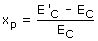
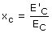

Energía cinética perdida y conservada La variación de energía cinética es la diferencia entre las energías cinéticas de ambos cuerpos antes y después del choque ΔEC = (E'C1 + E'C2) - (EC1 + EC2) Esta variación de energía cinética puede ser cero (Choque elástico) o negativa (Choque inelástico) Se define fracción de energía perdida (xp) al cociente de la variación de energía cinética entre la energía inicial  (Observa que xp tiene que ser menor o igual que cero) Se define fracción de energía conservada (xc) al cociente de la energía cinética final entre la la energía cinética inicial  Evidentemente se cumple que: xc - xp = 1 |